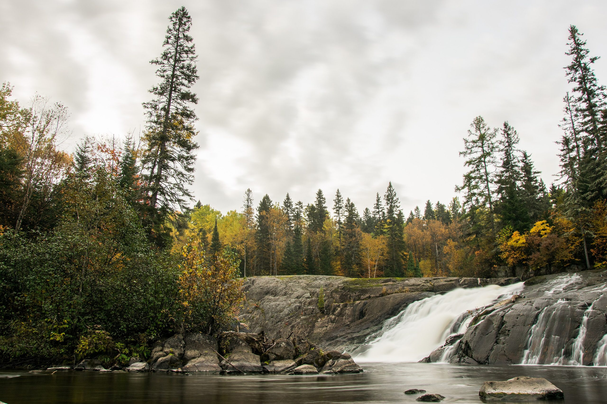
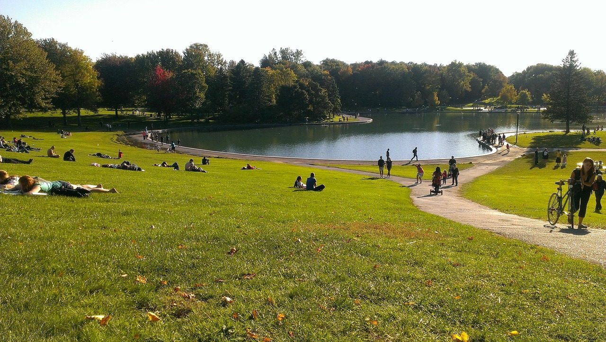
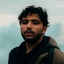
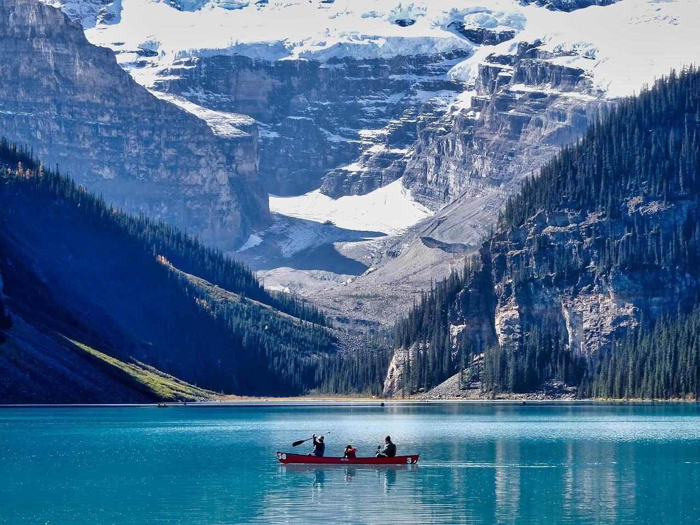

Осень Востока
Восемь дней от Монреаля до Ниагары в неделю, когда краснеют клёны: французский Квебек, озёра Алгонкина и водопад на рассвете.
- Длительность
- 8 дней
- Сезон
- конец сентября
- Группа
- до 8 человек
- Цена
- от 165 000 ₽
- Гид
- Павел Дорн
Клён, старые города и озёра
Программа по дням
Даты и гид
День 1
Встреча и гора Мон-Руаяль
Гид встречает вас в аэропорту. Вечером поднимаемся на Мон-Руаяль, откуда виден город в красных кронах и река Святого Лаврентия.

Маршрут ведёт Павел Дорн
Знает, какие холмы Шарлевуа краснеют первыми и в котором часу у Ниагары ещё никого нет.
- Живёт в Монреале
- Говорит по-французски
Цена поездки
Сколько выйдет вместе с перелётом
Тур оплачиваете нам в рублях по договору. Билеты, визовые сборы и страховку — сами, а мы подскажем, где дешевле. Цифры на сентябрь 2026 года.
Плюс визовые сборы 185 CAD: их платят Канаде при подаче анкеты.
Что входит в цену и что нет
Входит в цену
- Жильё на 7 ночей в городах и у озёр
- Минивэн и все переезды
- Гид все 8 дней
- Каноэ в Алгонкине
- Катер к Ниагаре
- Входные билеты в парки
Оплачивается отдельно
- Перелёт до Монреаля
- Визовые сборы: 185 CAD
- Обеды и ужины
- Страховка
- Ужин-дегустация в Шарлевуа по желанию
Что стоит знать до записи
- Много дорогиМежду Квебеком и Алгонкином 7 часов пути. Остановки каждые два часа, но это самый длинный день.
- Клён по погодеВ тёплую осень пик цвета сдвигается на неделю. Если краснеет позже, меняем порядок дней.
Даты и гид
Заезды 2027 года
-
26 сентября – 3 октября
Осень Востока: Квебек и Онтарио8 дней, 2027 год
Ведёт Павел Дорносталось 6 мест
от 165 000 ₽
Предоплата 30 % при записи — 49 500 ₽, остальное за месяц до поездки. Заезд идёт от четырёх человек: если группа не соберётся за 45 дней до старта, перенесём даты или вернём предоплату целиком.
Нет подходящих дат? Для компании от четырёх человек соберём частную поездку по этой программе.
Что спрашивают перед записью
Это больше города или природа?
Примерно поровну: три дня проводим в городах, три в парках и два в дороге с остановками.
Нужен ли французский?
Не нужен, всё переводит гид. Пара слов вроде «мерси» и «бонжур» пригодится.
Можно улететь из Торонто позже?
Да, в последний день отвезём в город вместо аэропорта.
Что с деньгами на месте?
Российские карты не работают. Возьмите наличные доллары или карту банка Казахстана или Киргизии.
Если хочется другого
Все туры-

Скалистые горы: Банф и Джаспер
Морейн на рассвете, Дорога ледяных полей и каноэ на Эмеральд-Лейк.
от 198 000 ₽ближайший заезд 3 июля
-

Тихий океан: Ванкувер и остров
Океан, кедровый лес, горбачи и медведи с борта лодки.
от 172 000 ₽ближайший заезд 5 июня
-

Виза и перелёт
Когда подавать анкету под даты этого маршрута и как лететь.
Визовый календарь